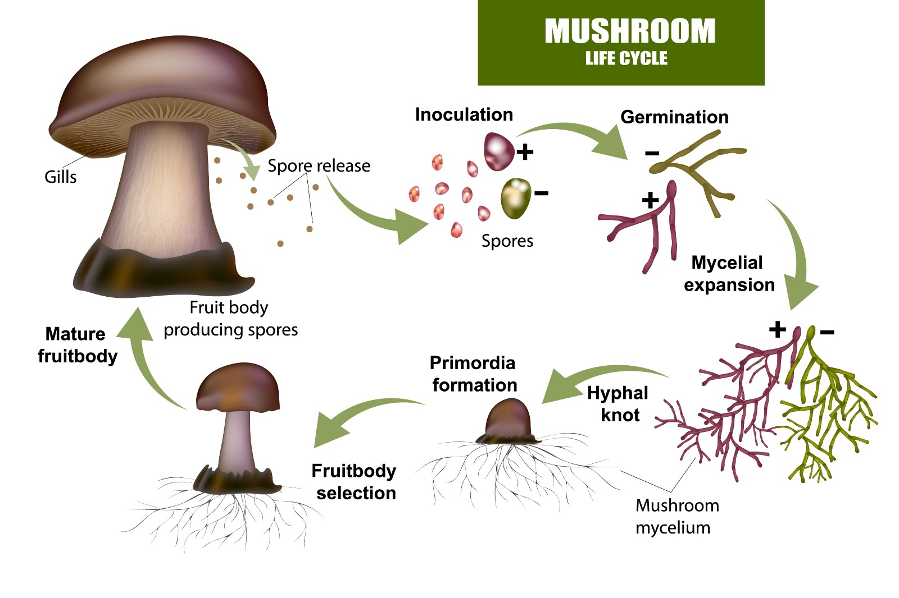

ყველაფერი იწყება ერთი კონკრეტული სოკოდან, უფრო სწორად, მისი „თესლიდან“, რომელსაც ბიოლოგიაში სპორა
ეწოდება.
სპორის გაღვივება: როდესაც სოკოს ქუდიდან გადმოყრილი მიკროსკოპული სპორა ხვდება ნოტიო ნიადაგში, ის იწყებს
გაღვივებას და უშვებს თხელ ძაფს — ჰიფას.
ტოტვა და შეხვედრა: ეს ძაფი იტოტება და ეძებს სხვა, თავსებად ძაფს (სხვა სპორისგან წამოსულს). როდესაც ორი ასეთი
ძაფი ერთმანეთს ხვდება და წყვილდება, იწყება ნამდვილი, ძლიერი მიცელიუმის სწრაფი ზრდა.
ქსელის ჩამოყალიბება: მიცელიუმი იზრდება წრიულად, ყველა მიმართულებით, იტოტება მილიონობითჯერ და ქმნის იმ დიდ
მიწისქვეშა ქსელს, რომელზეც ვისაუბრეთ. ანუ, მიწისქვეშა ქსელი ერთი კონკრეტული ორგანიზმის სხეულია, რომელიც სპორიდან
განვითარდა.

მიცელიუმი არ არის სამუდამო, თუმცა ხელსაყრელ პირობებში მას შეუძლია იცოცხლოს იმაზე ბევრად დიდხანს, ვიდრე დედამიწაზე არსებულმა ნებისმიერმა ცხოველმა ან ხემ.
მიცელიუმის სიცოცხლის ხანგრძლივობა დამოკიდებულია მის გარემოზე: მოკლევადიანი ქსელები: ზოგიერთი მიცელიუმი მხოლოდ რამდენიმე თვე ან წელი ცოცხლობს (მაგალითად, ერთწლიანი მცენარეებისა და ბალახების ფესვთა სისტემებთან). საუკუნოვანი გიგანტები: დიდ და ხელუხლებელ ტყეებში მიცელიუმი ათასობით წელს ათვლის.
საინტერესო ფაქტი: აშშ-ში, ორეგონის შტატში აღმოჩენილია სოკოს მუქი თაფლას (Armillaria ostoyae) მიცელიუმი, რომელიც 2400-ზე მეტი წლისაა
და დაახლოებით 9 კვადრატულ კილომეტრზეა გადაჭიმული. ეს მიჩნეულია დედამიწაზე ფართობით ყველაზე დიდ ცოცხალ ორგანიზმად.მიუხედავად ასეთი გამძლეობისა, ეს ეკოსისტემა ძალიან ფაქიზია. მიცელიუმის ქსელი მუშაობას წყვეტს და კვდება შემდეგი მიზეზების გამო: